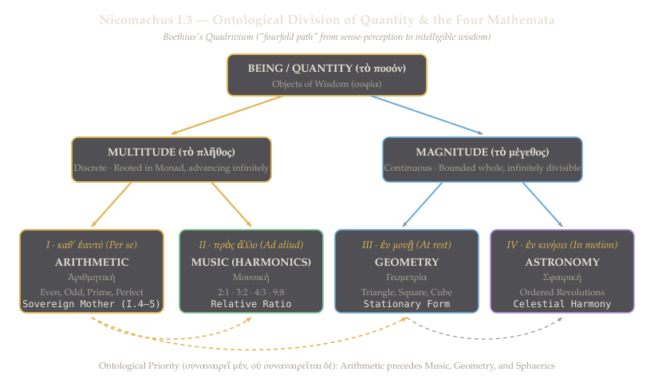
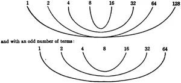
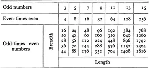
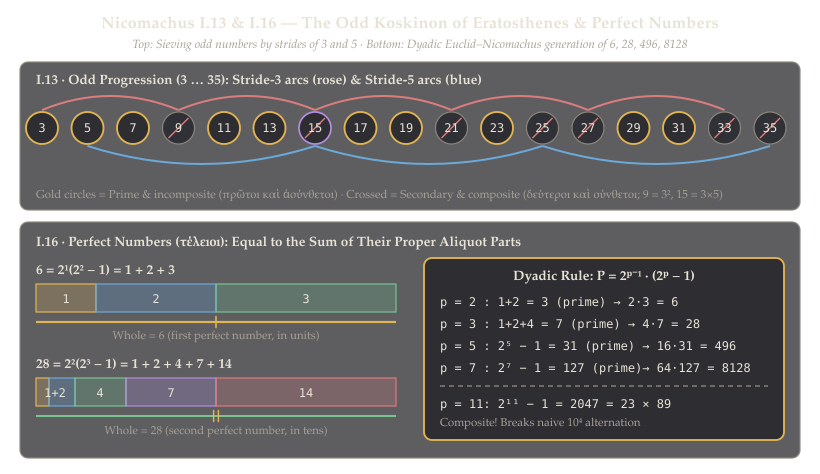
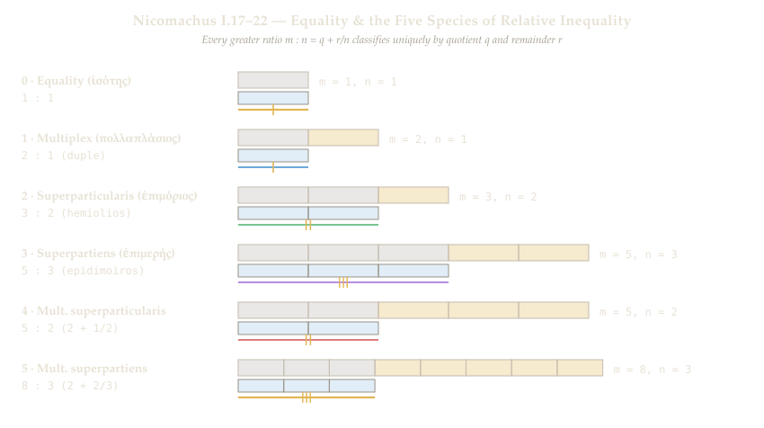
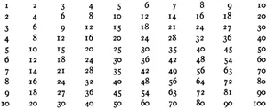
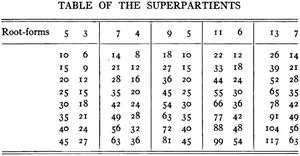

Book I: Philosophy of Number, Prime & Figurate Numbers, Multiple & Superparticular Ratios¶
Ἀριθμητικὴ Εἰσαγωγή αʹ — Nicomachus of Gerasa (ed. R. Hoche 1866 & M. L. D’Ooge 1926)
Book I opens with the foundational charter of mathematical philosophy in the Neo-Pythagorean tradition: philosophy as the desire for and comprehension of eternal, unchanging, immaterial reality as opposed to the perpetual flux of sensible bodies. Nicomachus defines the ontological division of quantity into discrete multitude (poson) and continuous magnitude (pēlikon), establishing the four sister mathematical sciences (mathemata)—Arithmetic, Music, Geometry, and Astronomy—ordered by asymmetric co-removal (synanairein).
Proceeding from the divine exemplar of number in the mind of the Creator, Book I develops:
Definitions of Number, Even, and Odd; Even-Times-Even, Even-Times-Odd & Odd-Times-Even (Chs. 6–10)
Prime, Incomposite & Relatively Prime Numbers and the Sieve (*Koskinon*) of Eratosthenes (Chs. 11–13)
Superabundant, Deficient, and Perfect Numbers (Chs. 14–16; 6, 28, 496, 8128)
The Five Species of Relative Inequality (Chs. 17–22; Multiple, Superparticular, Superpartient, Multiple Superparticular, Multiple Superpartient)
The Three Prostagma Commands Unfolding Every Ratio from Equality (Ch. 23; \(a, a+b, a+2b+c\))
Chapters¶
1. The ancients, who under the leadership of Pythagoras first made science systematic, defined philosophy as the love of wisdom. Indeed the name itself means this, and before Pythagoras all who had knowledge were called “wise” indiscriminately—a carpenter, for example, a cobbler, a helmsman, and in a word anyone who was versed in any art or handicraft. Pythagoras, however, restricting the title so as to apply to the knowledge and comprehension of reality, and calling the knowledge of the truth in this the only wisdom, naturally designated the desire and pursuit of this knowledge philosophy, as being desire for wisdom.
1. Those things, however, are immaterial, eternal, without end, and it is in their nature to persist ever the same and unchanging, abiding by their own essential being, and each one of them is called real in the proper sense. But what are involved in birth and destruction, growth and diminution, all kinds of change and participation, are seen to vary continually, and while they are called real things, by the same term as the former, so far as they partake of them, they are not actually real by their own nature; for they do not abide for even the shortest moment in the same condition, but are always passing over in all sorts of changes.

1. Again, to start afresh, since of quantity one kind is viewed by itself, having no relation to anything else, as ‘even,’ ‘odd,’ ‘perfect,’ and the like, and the other is relative to something else and is conceived of together with its relationship to another thing, like ‘double,’ ‘greater,’ ‘smaller,’ ‘half,’ ‘one and one-half times,’ ‘one and one-third times,’ and so forth, it is clear that two scientific methods will lay hold of and deal with the whole investigation of quantity: arithmetic, absolute quantity, and music, relative quantity.
1. Which then of these four methods must we first learn? Evidently, the one which naturally exists before them all, is superior and takes the place of origin and root and, as it were, of mother to the others.
1. And once more is this true in the case of music; not only because the absolute is prior to the relative, as ‘great’ to ‘greater’ and ‘rich’
1. Everything in the cosmos that has been arranged by nature according to craftsmanship—both in its parts and as a whole—manifestly stands distinguished and adorned according to number by Providence and by the Mind that crafted the universe. This exemplar was established like a preliminary sketch because number subsisted beforehand in the thought of the world-fashioning God: purely intelligible and altogether immaterial, yet truly eternal substance, so that in accordance with it, as an artistic pattern, all these things might be brought to completion—time, motion, heaven, the stars, and revolutions of every kind.
1. Number is a bounded multitude, or an ordered assembly of monads, or a flowing stream of quantity composed of monads. The first division of number is into the even and the odd.

1. Every number is half of the sum of the two lying adjacent to it on either side, and likewise half of the sum of those standing one beyond on either side, and again of those beyond them, and so on as far as it is possible to go.
1. The even-times odd is a number that is itself even in genus, yet is specifically set over against the even-times even just described: it admits division into two equal

1. The odd-times even is the number displaying the third species of the even, common to both of the aforementioned species as though it were itself a single mean between two extremes: for in one respect it resembles the even-times even, and in another the even-times odd; and wherein it is free of the one, therein it shares with the other, while wherein it holds something in common with the one, therein it differs from the other.
1. Moreover, while the odd is set apart by subdivision from the even and shares nothing with it—since the even is divisible into two equal halves whereas the odd cannot be split into two equal parts—three species likewise appear within it, differing one from another. The first is called prime and incomposite,
1. A secondary and composite number is indeed odd, since it is distinguished out of one and the same genus, yet it possesses nothing primary or

1. While these two species of the odd stand opposed to one another, a third is discerned in the middle between them, taking its form as it were from both—that which in itself is secondary and composite, yet relative to another is prime and incomposite. This occurs whenever a number, besides unity as its common measure, is also measured by some other measure and is therefore able to admit a part or parts with a different name alongside the part sharing its own name; yet
1. To make again a fresh start, of the simple even numbers, some are superabundant, some deficient, like extremes set over against each other, and some are intermediary between them and are called perfect.
1. The deficient number is one which has qualities the opposite of those pointed out, and whose factors added together are less in comparison than the number itself. It is as if some animal should fall short of the natural number of limbs or parts, or as if a man should have but one eye, as in the poem, “And one round orb was fixed in his brow”; or as though one should be one-handed, or have fewer than five fingers on one hand, or lack a tongue, or some such member. Such a one would be called deficient and so to speak maimed, after the peculiar fashion of the number whose factors are less than itself, such as 8 or 14. For 8 has the factors half, fourth, and eighth, which are 4, 2, and 1, and added together they make 7, and less than the original number. The parts, therefore, fall short of making up the whole.
1. While these two varieties are opposed after the manner of extremes, the so-called perfect number appears as a mean, which is discovered to be in the realm of equality, and neither makes its parts greater than itself, added together, nor shows itself greater than its parts, but is always equal to its own parts. For the equal is always conceived of as in the mid-ground between greater and less, and is, as it were, moderation between excess and deficiency, and that which is in tune, between pitches too high and too low.

1. Now that we have given a preliminary systematic account of absolute quantity we come in turn to relative quantity.
1. Once more, then; the multiple (pollaplasios) is the species of the greater first and most original by nature, as straightway we shall see, and it is a number which, when it is observed in comparison with another, contains the whole of that number more than once. For example, compared with unity, all the successive numbers beginning with 2 generate in their proper order the regular forms of the multiple; for 2, in the first place, is and is called the double, 3 triple, 4 quadruple, and so on; for ‘more than once’ means twice, or three times, and so on in succession as far as you like.

1. The superparticular (epimorios), the second species of the greater both naturally and in order, is a number that contains within itself the whole of the number compared with it, and some one factor of it besides.
1. It is the superpartient (epimeres) relation when a number contains within itself the whole of the number compared and in addition more than one part of it; and ‘more than one’ starts with 2 and goes on to all the numbers in succession. Thus the root-form of the superpartient is naturally the one which has in addition to the whole two parts of the number compared, and as a species will be called superbipartient; after this the one with three parts besides the whole will be called supertripartient as a species; then comes the superquadripartient, the superquintipartient, and so forth.

1. The regular arrangement and orderly production of both species are discovered when we set forth the successive even and odd numbers, beginning with 3, and compare with them the simple series of odd numbers only, from 5 in succession, first to first—that is, 5 to 3,—second to second—that is, 7 to 4,—third to third—that is, 9 to 5,—fourth to fourth—that is, 11 to 6,—and so on in the same order as far as you like. In this way the forms of the superpartient and the subsuperpartient, in due order, will be disclosed through the root-forms of each species, the superbipartient first, then the supertripartient, superquadripartient, and superquintipartient, and further in succession in similar manner; for after the root-forms of each species the ones which follow them will be produced by doubling, or tripling, both the terms, and in general by multiplying after the regular forms of the multiple.
1. The multiple superparticular is a relation in which the greater of the terms compared holds the lesser within itself more than once, and in addition some single part of it, whatever that part may be. As a compound, this species varies in two respects according to the proper character of each of the combined names. Because the multiple superparticular is compounded generally out of the multiple and the superparticular, in its specific subdivisions it will display variety and alternation—separately in the first part of the name, and specifically in the second: in the first, from the multiple, double, triple, quadruple, quintuple, and so on; in the second, from the superparticular generally, its orderly specific forms—sesquialter, sesquitertian, sesquiquartan, sesquiquintan, and so on—so that their compounding advances in such an order as this: double sesquialter, double sesquitertian, double sesquiquartan, double sesquiquintan, double sesquisextan, and analogously; starting anew, triple sesquialter, triple sesquitertian, triple sesquiquartan, triple sesquiquintan;

1. The multiple superpartient is the remaining relation of number; this relation, along with its counterpart named with the prefix sub-, occurs whenever a number contains the compared number as a whole more than once—twice, three times, or any number of times—and in addition several parts of it more than one, whether 2, 3, 4, 5, and so on. Because of what we explained earlier, these parts are not halves, but thirds, fourths, fifths, and according to the same sequence.